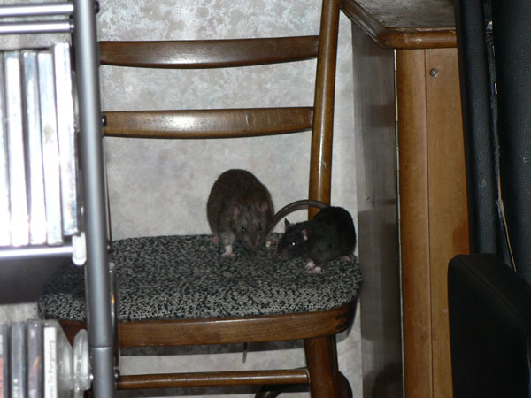
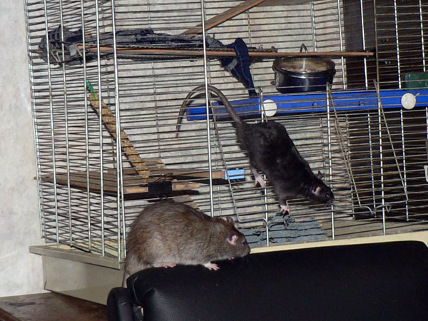
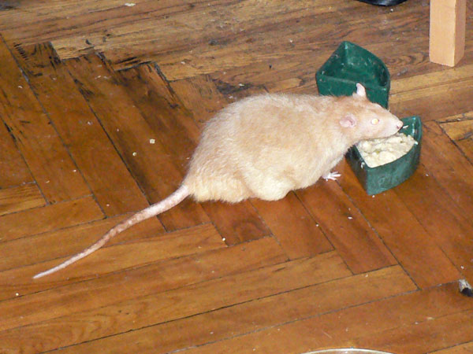
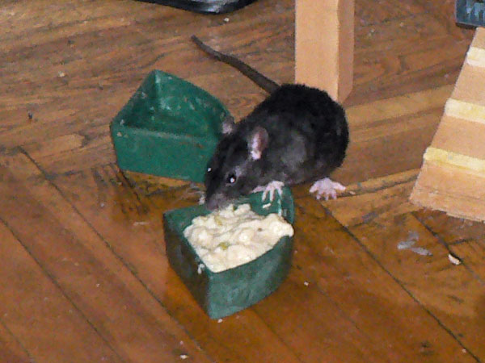
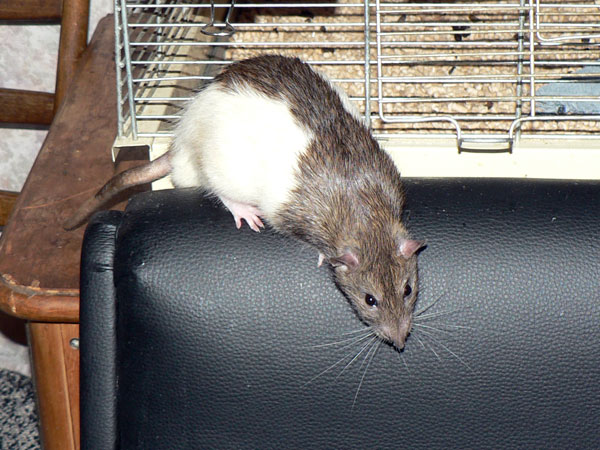
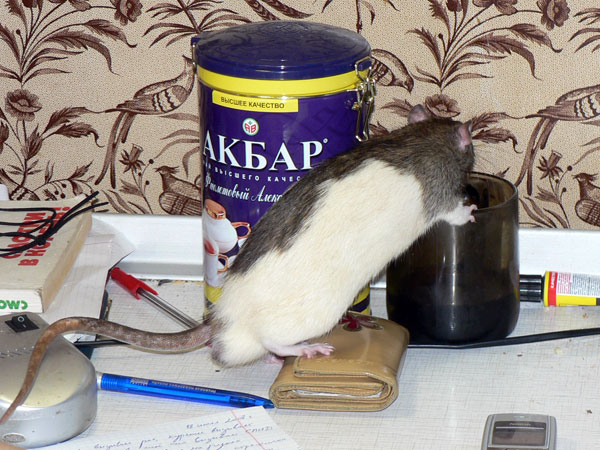
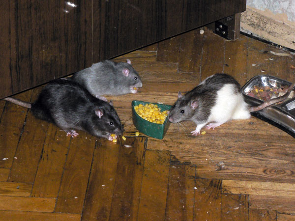
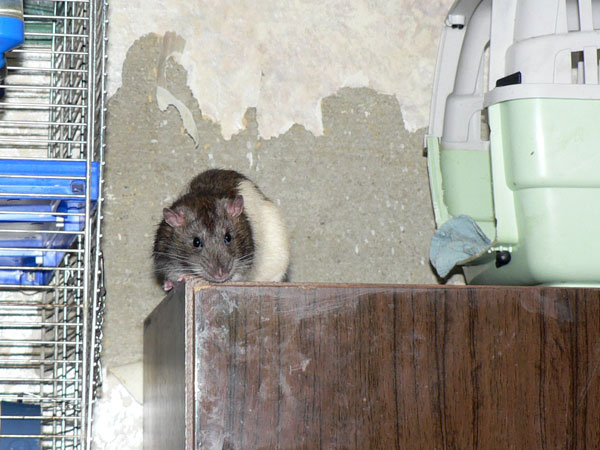
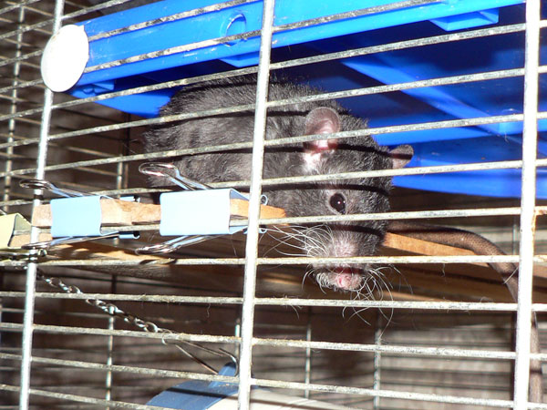
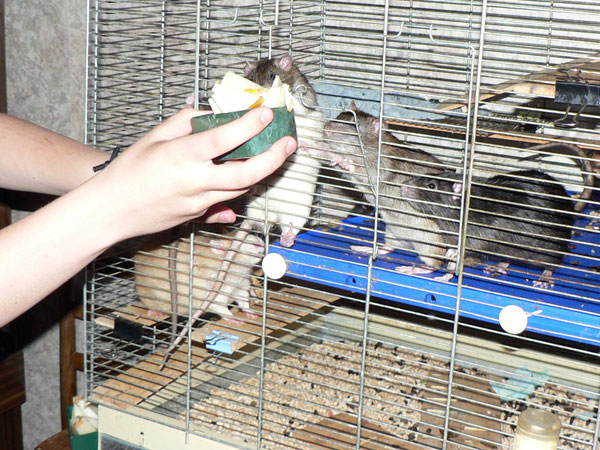

Июль 2008

Дон Румата: — Сатир, а ты там усидишь? Узко же.

Сатир Верещагин: — Да, как-то неудобно...

Дон Рэба: — Все в мире фигня, кроме пчел. Но пчел мало, поэтому они — тоже фигня...

Дон Рэба: — Мелкий, и хвостом придерживаться не
забывай!
Сатир: — Стараюсь!

Сатир Верещагин, недоселф-недорекс.

Эрик ест. Это он умеет.

Сатир: — Как, Эрик ушел и не доел йогурт?!

Сатир: — Ну тогда я за него челюстями поработаю.

Нагваль Никодим: — Что-то нос замерз...

Дон Румата: — У людей есть фото в профиль и анфас, а у крысов — еще и сверху головы.

Эрик Янссон: — Ну какой же я толстый? Вот смотрите, какой я на самом деле пло-о-ский...

Дон Румата: — Чаю позволите?

Дон Румата: — Делай как я!
Харитон: — Есть хомячить кукурузу!

Дон Румата: — Эй, Сатир! Кто же так ест!

Дон Румата: — Вот смотри, как надо — не
вытягиваясь, сидя а шариком!
Сатир: — У-у, какие сложности этикета!

Нагваль Никодим: — Я самый начитанный крыс из всех.

Нагваль Никодим: — Вот эту книгу рекомендую прочесть следующей.

Это не крыса, это — Овчарка. Вот так приходится убирать шкаф в связи с деятельностью некоторых засранцев.

Дон Румата: — Обои? А я тут при чем? Свидетели есть?

Сатир: — А дропсины не найдется?

Эрик: — Через три часа разбудить и отнести гулять.

— Выламывай дверь, жратву несут!!!

Раскрысивание дыни.

Два благородных дона.